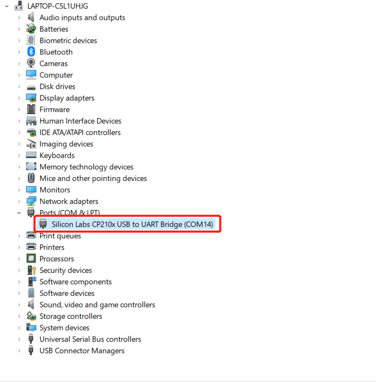

2 Install driver
Notice: There is no need to download and install the driver in the myAGV Pi 2023 system.
Users can click the button below to download the corresponding CP210X or CP34X driver compressed package according to the operating system they are using. After decompressing the compressed package, select the installation package corresponding to the number of bits of the operating system to install.
There are currently two driver chip versions, CP210X (applicable to CP2104 version) and CP34X (applicable to CH9102 version) driver compressed package. If you are not sure which USB chip your device uses, you can install both drivers at the same time. (CH9102_VCP_SER_MacOS During the installation process, an error may appear, but the installation has actually been completed, so just ignore it.)
For Mac OS, before installing make sure system "Preferences->Security & Privacy->General" and allow access from App Store and Recognized Developers.
Download the M5Stack-basic serial port driver at the bottom
Download the Atom serial port driver at the end

1.3 How to distinguish CP210X and CP34X chips
- As shown in the figure below, open Device Manager and view Ports (COM and LPT)

- If Port (COM and LPT) displays USB-Enhanced-SERIAL CH9102, it is CP34X chip

- If Port (COM and LPT) shows Silicon Labs CP210x USB to UART Bridge, it is CP210X chip
